Building a REST API with Flask-RESTx and Swagger Documentation
Using this document, we'll create a simple REST API to manage contacts. The API will include fields for name, email, and a subscription indicator to track whether a contact has subscribed to our newsletter. We'll use Flask-RESTx, which can automatically generate Swagger documentation for this API. The documentation will make it easier for developers to understand and interact with the API endpoints.
The API will cover the following operations:
-
GET requests to retrieve contact information
-
POST requests to add new contacts
-
PUT requests to update existing contact details
-
DELETE requests to remove contacts
Set Up the Flask Environment in Windows
You can use the same environment that you used for Building Your First REST API Using Flask.
If the virtual environment isn't activated, activate it and install Flask-RESTx by typing the command: pip install flask-restx
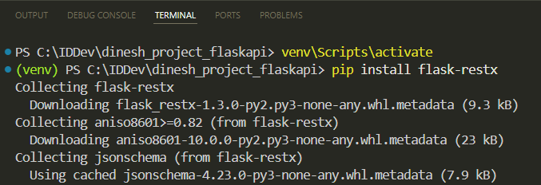
Create the Flask Application
1 Create a file named contacts.py.
2 Import necessary components and create an instance of the Flask class:
from flask import Flask, request
from flask_restx import Api, Resource, fields
app = Flask(__name__)
3 Initialize the Flask-RESTx API:
api = Api(app, version='1.0', title="Dinesh's Contact Management API", description='Add, see, update, and remove your contacts.')
4 Define a namespace for the API:
ns = api.namespace('contacts', description='Contact operations')
-
ns: This is a variable that stores the namespace instance. You can name this variable anything you like. -
api.namespace('contacts', ...): This method creates a namespace with the pathcontacts. This means all endpoints defined under this namespace will be prefixed with/contacts.
A namespace helps organize your API endpoints under a common group, making it easier to manage and document them. Additionally, namespaces improve the auto-generated Swagger documentation by categorizing endpoints.
5 Define the contact model:
contact_model = api.model('Contact', {
'id': fields.Integer(readOnly=True, description='The contact unique identifier.'),
'name': fields.String(required=True, description='The contact name.'),
'email': fields.String(required=True, description='The contact email.'),
'subscribed': fields.Boolean(description='Indicates whether the contact is subscribed to promotional messages. Valid values are true or false.')
})
When you define this model in Flask-RESTx, it automatically includes this model in the Swagger documentation, making it clear what kind of data your endpoints expect.
6 Create an empty list to store contacts temporarily:
contacts = []
7 Define the ContactList resource and its endpoints:
@ns.route('/')
class ContactList(Resource):
@ns.doc('list_contacts', description='Retrieves a list of all contacts.')
@ns.marshal_list_with(contact_model)
def get(self):
return contacts
@ns.doc('create_contact', description='Creates a new contact.')
@ns.expect(contact_model)
@ns.marshal_with(contact_model, code=201)
def post(self):
new_contact = api.payload
new_contact['id'] = len(contacts) + 1
contacts.append(new_contact)
return new_contact, 201
-
This resource has two main methods:
get(retrieves the full list of contacts) andpost(adds a new contact to the list). -
The
ns.docdecorator adds descriptions to thegetandpostoperations, enhancing the auto-generated documentation. -
The
ns.marshaldecorator specifies that the output will be in the format defined by thecontact_model. -
ns.expectspecifies that the request body must follow thecontact_model, ensuring that the incoming data matches the defined schema.
8 Define the Contact resource and its endpoints:
@ns.route('/<int:id>')
@ns.response(404, 'Contact not found')
@ns.param('id', 'The contact identifier')
class Contact(Resource):
@ns.doc('get_contact', description='Retrieves the contact information by contact ID.')
@ns.marshal_with(contact_model)
def get(self, id):
for contact in contacts:
if contact['id'] == id:
return contact
api.abort(404)
@ns.doc('delete_contact', description='Deletes the contact by contact ID.')
@ns.response(204, 'Contact deleted')
def delete(self, id):
global contacts
contacts = [contact for contact in contacts if contact['id'] != id]
return '', 204
@ns.doc('update_contact', description='Updates the contact information by contact ID.')
@ns.expect(contact_model)
@ns.marshal_with(contact_model)
def put(self, id):
for contact in contacts:
if contact['id'] == id:
contact.update(api.payload)
return contact
api.abort(404)
This resource has three main methods: get (retrieves the contact information by contact ID), delete (deletes the contact by contact ID), and put (updates the contact information by contact ID).
9 Add the namespace to the API to ensure that endpoints, such as GET /contacts, can be accessed through the API:
api.add_namespace(ns)
10 Ensure that the Flask application will start running with debug mode enabled when you run the contacts.py file:
if __name__ == '__main__':
app.run(debug=True)
Run the Application
On Visual Studio Code, click Run for contacts.py. This will launch the server locally:
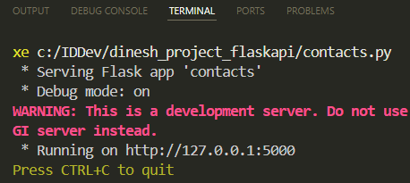
Access and Review the Swagger Documentation
Once the server is running, you can access the automatically generated Swagger documentation by navigating to http://127.0.0.1:5000/ in your web browser.
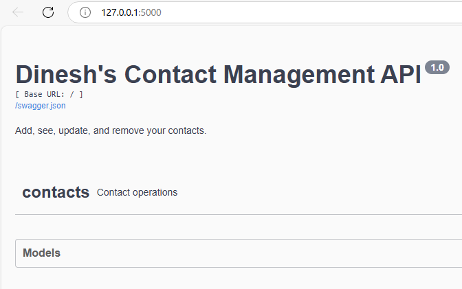
Click Models, then Contact: The expanded view will show you the fields that make up the model, along with their data types and descriptions.
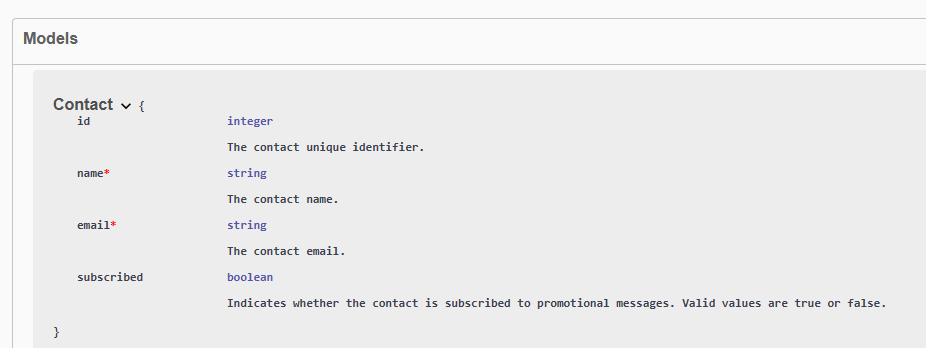
Expand Contacts to see all the API endpoints, such as GET /contacts:
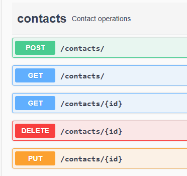
Click on the desired endpoint to expand it. For example, click on POST /contacts to see the post operation's description and example of the JSON object that you can send:

You can also see the example response:
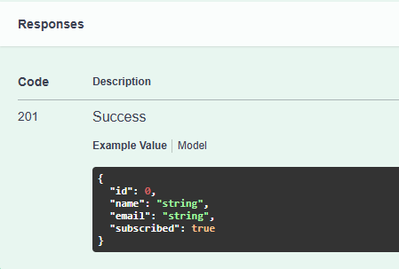
Try it Out
You can use the Try it out feature in the Swagger documentation for all operations. This feature allows you to interact with the API directly from the documentation interface. Let's add a contact:
1 Click Try it out for the post operation. You'll see fields where you can enter data.
2 Add the contact details in the Payload field:
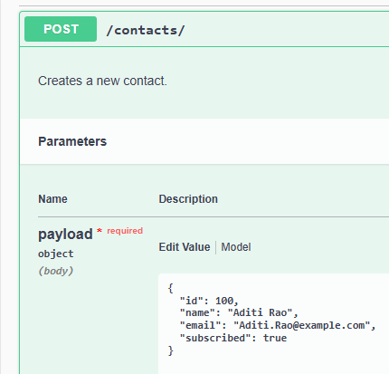
3 Click Execute.
If successful, you'll get a 201 status code along with the details of the newly created contact:
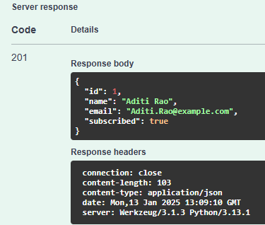
4 Add another contact by repeating steps 1 to 3, entering the new contact's details in the Payload field, and executing the request again:
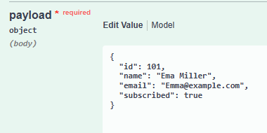
5 Expand the GET /contacts endpoint:
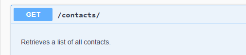
6 Click Try it out for the get operation.
7 Click Execute to send a request to the endpoint.
The response body will display the data retrieved by the GET /contacts operation, showing the information for both added contacts and indicating a 200 status code:
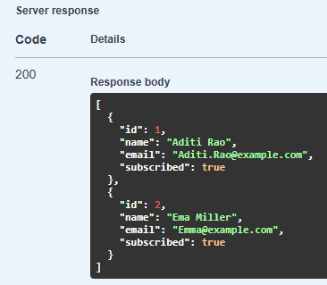
The 200 status indicates that the request was successful, and the server has returned the requested data.
8 Let's say you want to update email from Emma@example.com to Emma.Miller@example.com. Expand the PUT /contacts/{id} endpoint.
9 Click Try it out.
10 Enter the ID of the contact whose email you want to change:
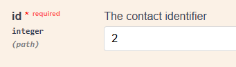
11 In the request body, enter the new email address along with any other details you want to keep unchanged:
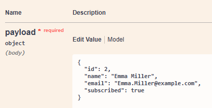
12 Click Execute.
The response body will show the updated contact information, and you'll receive a 200 status code indicating that the update is successful:
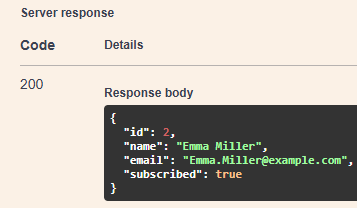
Nicely done! By using this document, we successfully created a Contact Management API using Flask-RESTx that handles GET, POST, PUT, and DELETE requests. We also auto-generated Swagger documentation that provides information about the API and allows users to interact with the API.